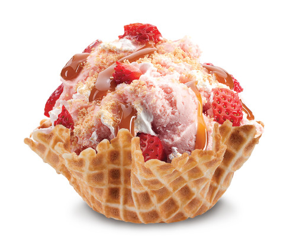
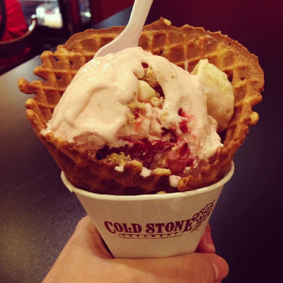
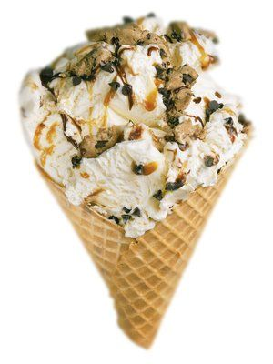
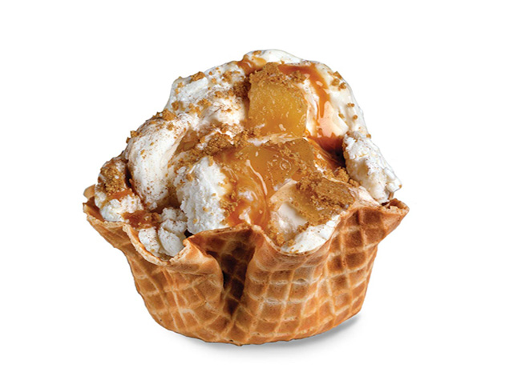
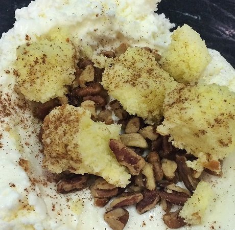
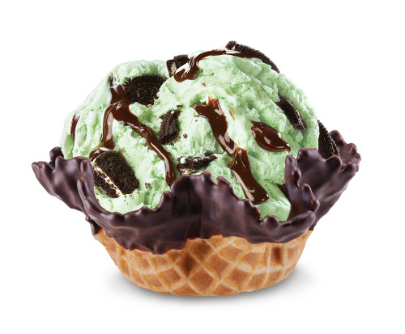
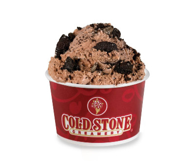
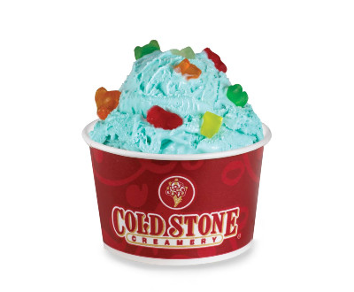
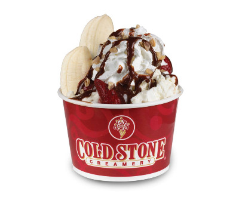
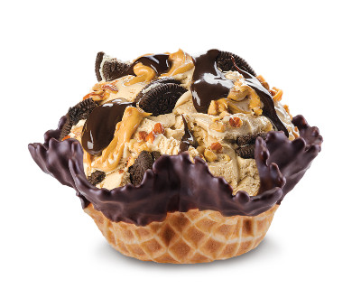

Our Strawberry Blonde
What do you get when you combine strawberries, pie crust, caramel and whipped topping? Usually a pie - which is why this ice cream is awesome! Ingredients: Strawberry Ice Cream with Graham Cracker Pie Crust, Strawberries, Caramel and Whipped Topping. Eleifend finibus orci eu maximus. Pellentesque sollicitudin id arcu ut cursus. Suspendisse eu odio sed nisl aliquet elementum. Nullam vel rutrum massa, at sagittis libero. In a mi eget tellus faucibus porta et id orci. Fusce est tortor, auctor vitae sodales eu, porta et orci. Nullam eu mattis lacus. Aenean ac risus et lacus vehicula mollis. Phasellus semper rutrum volutpat.
Strawberry Banana Rendezvous
There’s nothing naughty about this scrumptious strawberry and banana treat - unless you spoil your dinner. Then you’re on your own. Ingredients: Strawberry Ice Cream with Graham Cracker Pie Crust, White Chocolate Chips, Strawberries and Banana. Finibus orci eu maximus. Pellentesque sollicitudin id arcu ut cursus. Suspendisse eu odio sed nisl aliquet elementum. Nullam vel rutrum massa, at sagittis libero. In a mi eget tellus faucibus porta et id orci. Fusce est tortor, auctor vitae sodales eu, porta et orci. Nullam eu mattis lacus. Aenean ac risus et lacus vehicula mollis. Phasellus semper rutrum volutpat.
Cookie Doughn't You Want Some
It’s like someone made a finger-licking good ice cream sandwich, drizzled it with fudge and caramel, and then put the whole thing in a cup! Or a waffle bowl, don’t be picky. Ingredients: French Vanilla Ice Cream with Chocolate Chips, Cookie Dough, Fudge and Caramel Orci eu maximus. Pellentesque sollicitudin id arcu ut cursus. Suspendisse eu odio sed nisl aliquet elementum. Nullam vel rutrum massa, at sagittis libero. In a mi eget tellus faucibus porta et id orci. Fusce est tortor, auctor vitae sodales eu, porta et orci. Nullam eu mattis lacus. Aenean ac risus et lacus vehicula mollis. Phasellus semper rutrum volutpat.
Apple Pie A La Cold Stone
Just like Mama used to make! If Mama used to make french vanilla ice cream with cinnamon, graham cracker pie crust, apple pie filling and caramel, of course. Ingredients: French Vanilla Ice Cream with Cinnamon, Graham Cracker Pie Crust, Apple Pie Filling and Caramel. Pellentesque sollicitudin id arcu ut cursus. Suspendisse eu odio sed nisl aliquet elementum. Nullam vel rutrum massa, at sagittis libero. In a mi eget tellus faucibus porta et id orci. Fusce est tortor, auctor vitae sodales eu, porta et orci. Nullam eu mattis lacus. Aenean ac risus et lacus vehicula mollis. Phasellus semper rutrum volutpat.
Banana Caramel Crunch
Talk about a taste sensation! Crunchy almonds, firm, ripe banana, sweet caramel and chilly, delicious french vanilla ice cream. Are you ready to engage all your tastebuds? Go! Ingredients: French Vanilla Ice Cream with Roasted Almonds, Banana and Caramel Sollicitudin id arcu ut cursus. Suspendisse eu odio sed nisl aliquet elementum. Nullam vel rutrum massa, at sagittis libero. In a mi eget tellus faucibus porta et id orci. Fusce est tortor, auctor vitae sodales eu, porta et orci. Nullam eu mattis lacus. Aenean ac risus et lacus vehicula mollis. Phasellus semper rutrum volutpat.
Mint Mint Chocolate Chocolate Chip
It might feel weird to say, but it’s great to eat! It’s double the fun and quadruple the yumminess. It’s octoble the-- wait, that’s not even a word. Just trust me, it’s good!eu urna ac est maximus luctus at a lorem. Sed pretium congue nisl, quis vulputate arcu maximus sit amet. Vivamus pulvinar metus dapibus erat vehicula rhoncus nec quis enim. Nulla vitae convallis orci. Vivamus rhoncus dui at ornare commodo. Nam iaculis magna at ex varius, quis porta lectus consectetur. Nullam cursus lacinia consequat. Pellentesque habitant morbi tristique senectus et netus et malesuada fames ac turpis egestas.
Delicious Dirt
I’ll admit it. When I was a kid I liked to eat dirt. I’m not proud of it. But there it is. This is waaay tastier. Plus, Mom and Dad approve of me eating it. Pretium congue nisl, quis vulputate arcu maximus sit amet. Vivamus pulvinar metus dapibus erat vehicula rhoncus nec quis enim. Nulla vitae convallis orci. Vivamus rhoncus dui at ornare commodo. Nam iaculis magna at ex varius, quis porta lectus consectetur. Nullam cursus lacinia consequat. Pellentesque habitant morbi tristique senectus et netus et malesuada fames ac turpis egestas.
Beary Beary Blue
Who wants to go on an adventure with cute little bears made of chewy deliciousness?? I do! I do! Add in Cotton Candy Ice Cream and I might never come back! Congue nisl, quis vulputate arcu maximus sit amet. Vivamus pulvinar metus dapibus erat vehicula rhoncus nec quis enim. Nulla vitae convallis orci. Vivamus rhoncus dui at ornare commodo. Nam iaculis magna at ex varius, quis porta lectus consectetur. Nullam cursus lacinia consequat. Pellentesque habitant morbi tristique senectus et netus et malesuada fames ac turpis egestas.
Banana Split Decision
There was a time, long ago, when no one had ever heard of a Banana Split. We now refer to that time as the Dark Ages. Look it up. It was bad. This ice cream, however, is delightful!Vivamus pulvinar metus dapibus erat vehicula rhoncus nec quis enim. Nulla vitae convallis orci. Vivamus rhoncus dui at ornare commodo. Nam iaculis magna at ex varius, quis porta lectus consectetur. Nullam cursus lacinia consequat. Pellentesque habitant morbi tristique senectus et netus et malesuada fames ac turpis egestas.
Mud Pie Mojo
It might sound like something from your childhood, but we assure you, this is one grown up dessert! If you’ve lost your mojo, or accidentally misplaced it, order this ice cream ASAP. Nulla vitae convallis orci. Vivamus rhoncus dui at ornare commodo. Nam iaculis magna at ex varius, quis porta lectus consectetur. Nullam cursus lacinia consequat. Pellentesque habitant morbi tristique senectus et netus et malesuada fames ac turpis egestas.